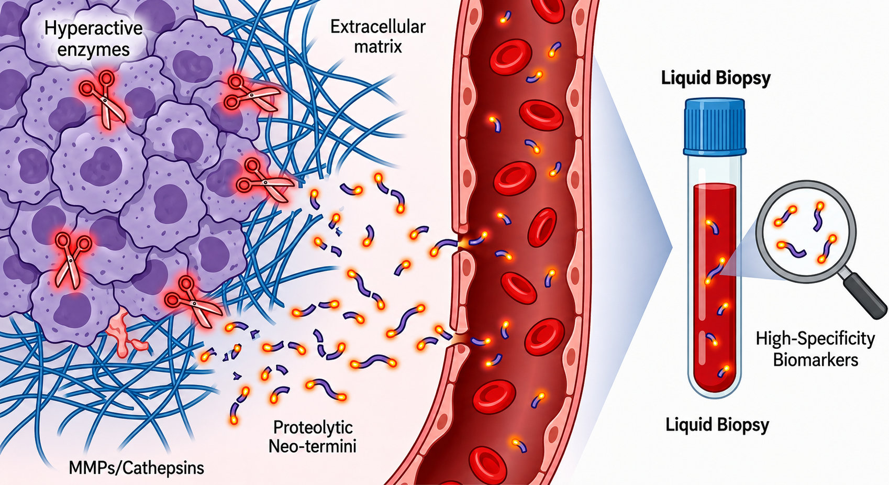

Terminomics / Positional Proteomics
Current
Manuscript in Preparation
The tumor microenvironment is characterized by dysregulated protease activity, where proteases cleave proteins and remodel the extracellular environment. These cleavage events generate new protein termini that record specific proteolytic activity and can serve as molecular fingerprints of disease-associated proteolysis. Terminomics captures these neo-termini to reveal proteolytic remodeling and identify potential disease biomarkers.